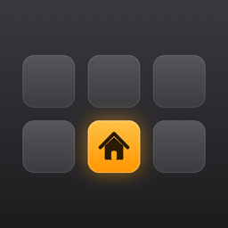
ESPDeck
Turn an Elgato Stream Deck into a HomeKit control panel you can put anywhere in the house.
A build-it-yourself project. Open source, with no account and no cloud service.
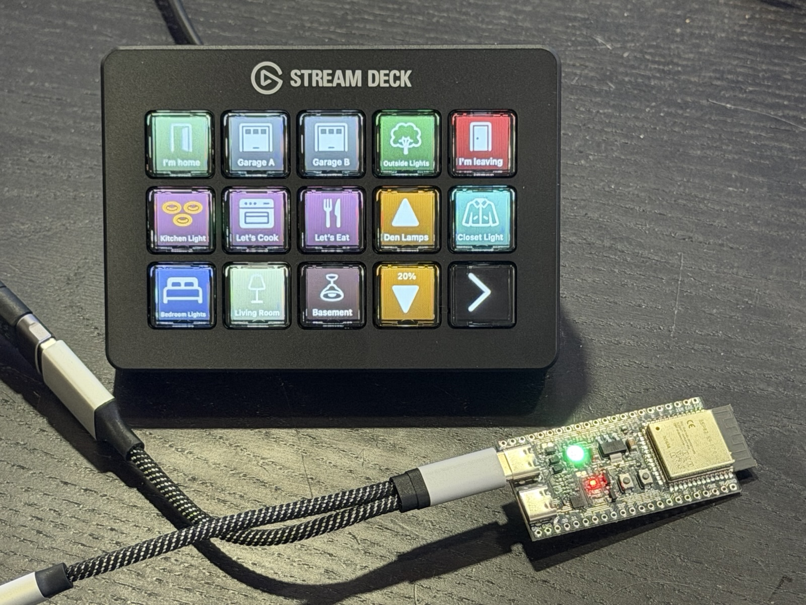
How it works
The Stream Deck plugs into a small Wi-Fi board in a computer's place. A Mac elsewhere on your network does the thinking.
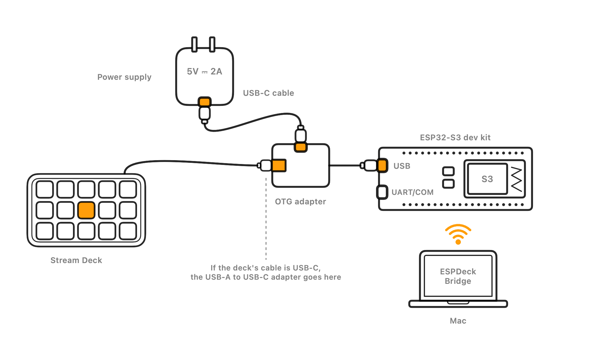
- The dev kit drives the deck. An ESP32-S3 dev kit plugs into the Stream Deck and powers it. It carries key presses and pictures, and nothing more.
- ESPDeck Bridge runs on your Mac. The app watches your Home, draws every key, and triggers actions when keys are pressed. The Mac stays on.
- The deck goes wherever you want it. By the door, on a nightstand, in the garage: anywhere your Wi-Fi reaches and there's a power outlet.
What it does
Real buttons for the things you do in your Home every day.
Keys that show what's happening
A key shows its accessory's state: on or off, open, opening, closed, locked. You choose the icon, label and color for each state.
Accessories, scenes and Shortcuts
A key toggles one accessory or several together, runs a scene, or runs one of your Shortcuts.
Tap, double tap and hold
Each kind of press can do something different on the same key.
Brightness and fan speed
A pair of keys steps a light's brightness or a fan's speed up and down. Holding a key keeps stepping.
Pages of keys
A deck has as many pages as you like, and several decks can share one Mac.
Sleeps when you do
The deck's screen sleeps on a timer, or when something in your Home changes, like a door locking.
Set up from your Mac
The app installs the dev kit's firmware over USB, joins it to Wi-Fi and names it. Updates then arrive over Wi-Fi.
Paired and private
A deck only obeys the Mac it's paired with, and everything stays on your network. Its stored secrets can be encrypted on its chip.
Try it without hardware
A demo deck lets you lay out keys and test their actions before you build anything.
ESPDeck Bridge
The Mac app is where a deck's keys are laid out, and where the work happens once they're pressed. Scroll sideways for a tour.
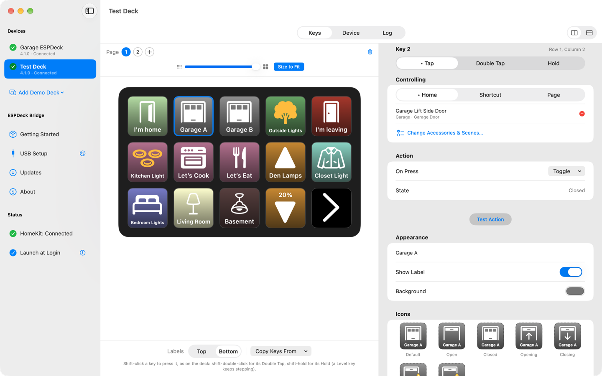
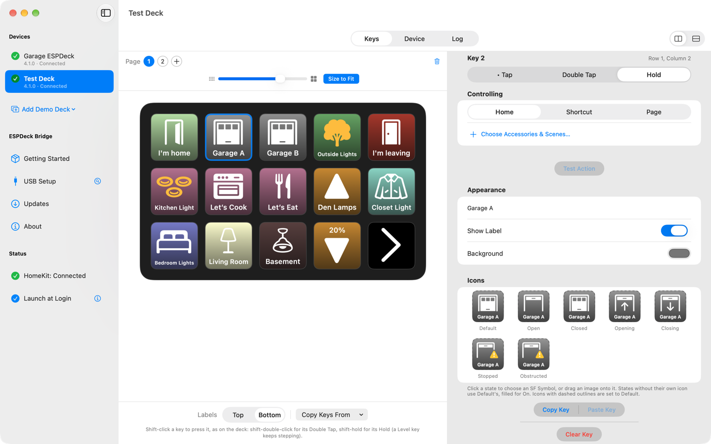
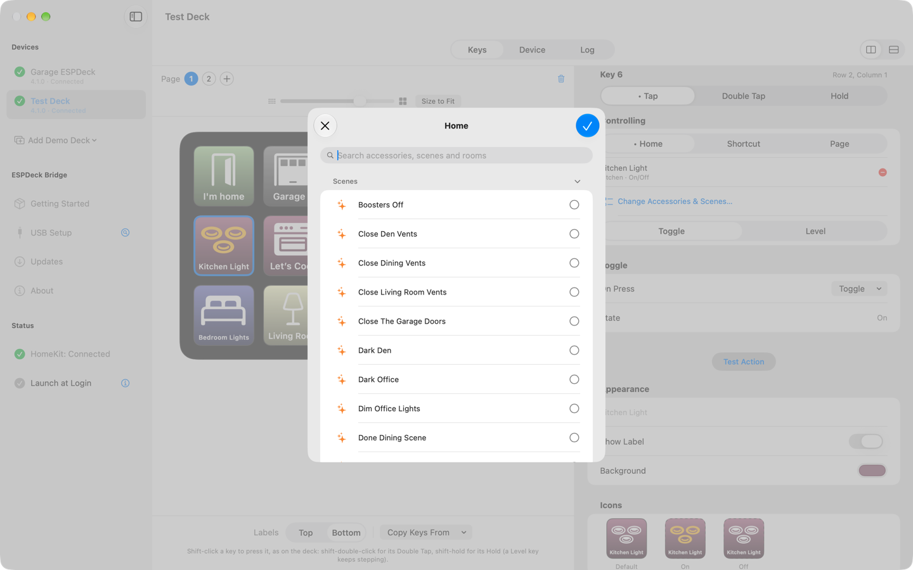
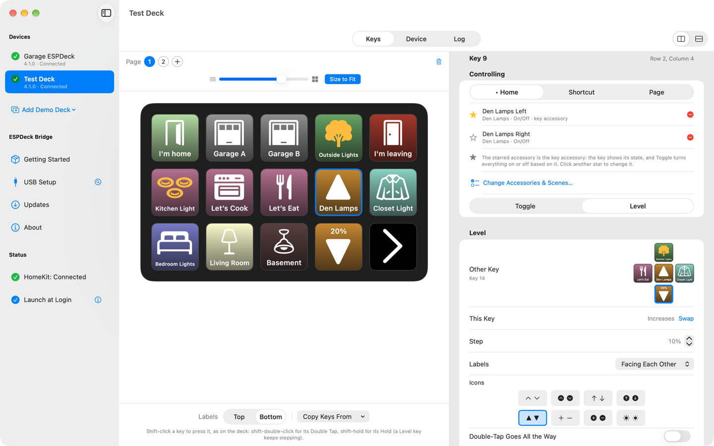
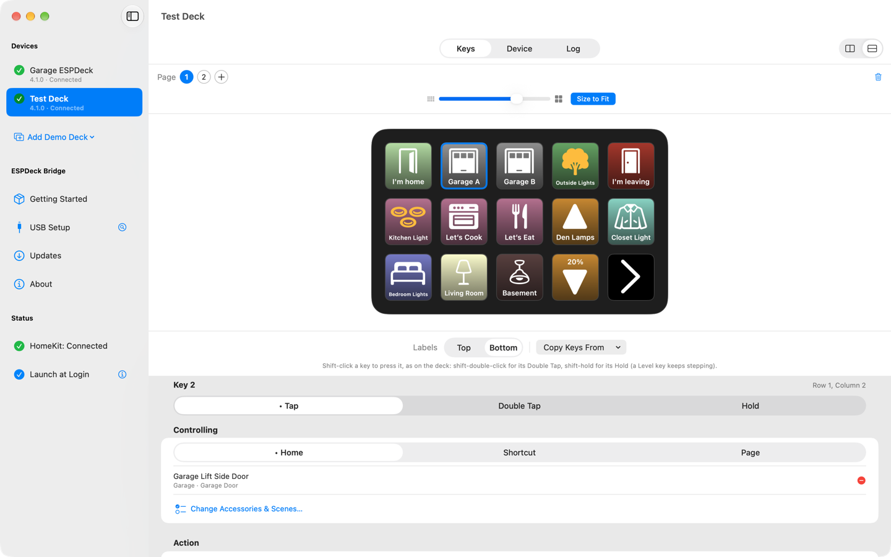
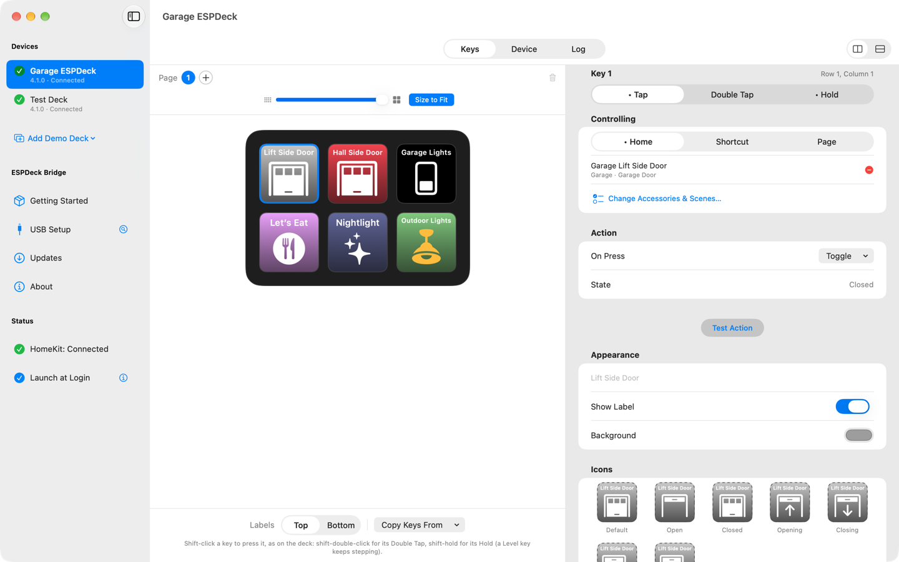
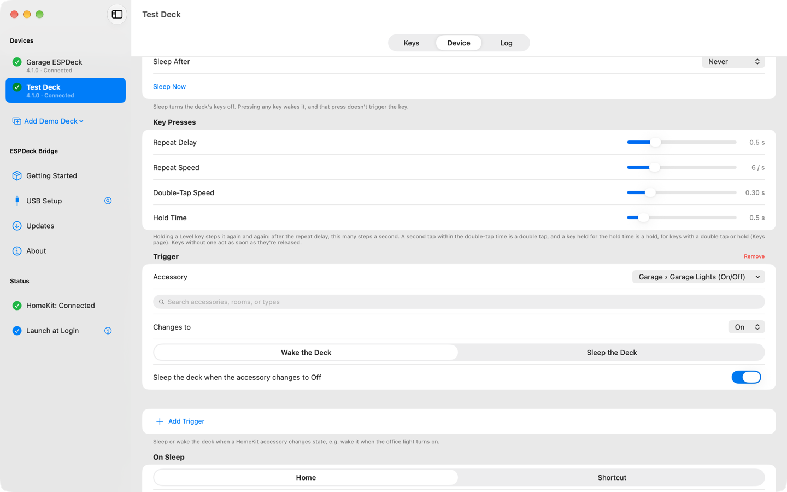
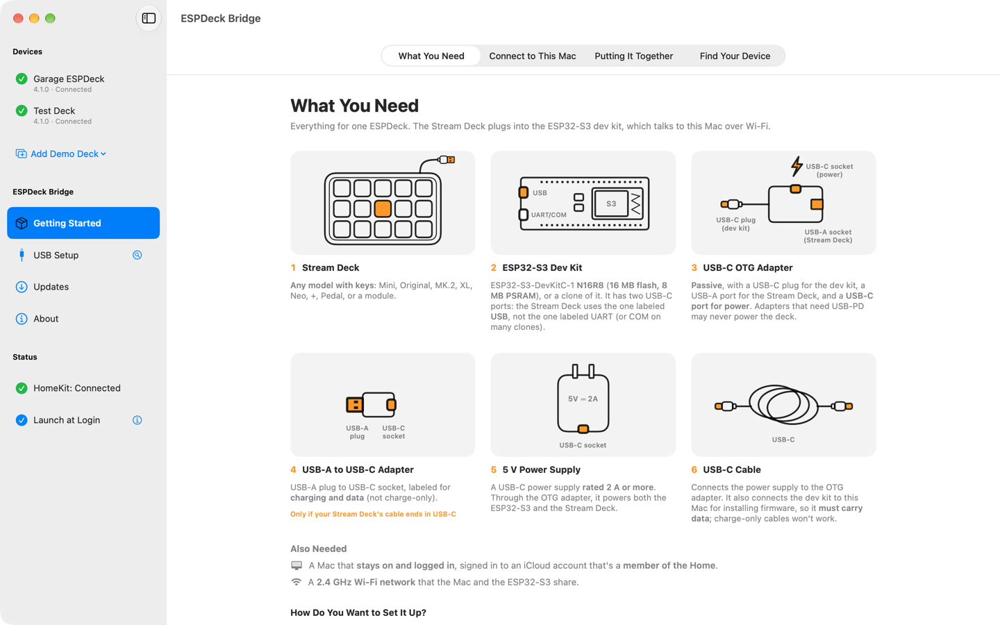
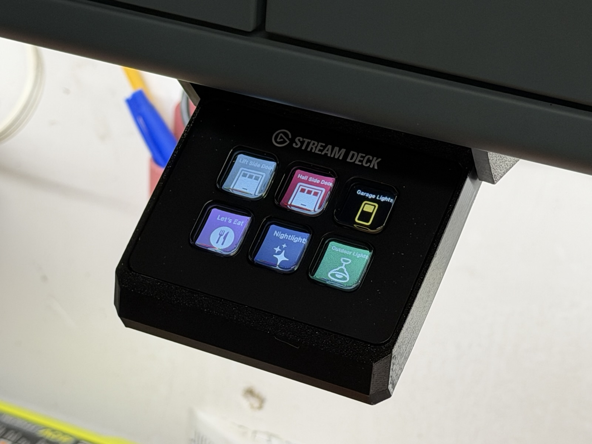
Put it where the buttons belong
Every Stream Deck with keys works: Mini, Original, MK.2, XL, Neo, +, Pedal and the modules. Only the keys are used, not dials, touch strips or second screens.
This Mini lives under a garage shelf in a 3D-printed slide-out mount, with the garage doors and lights a press away.
What you need
A Stream Deck, a dev kit and a few cables. There's no soldering, and the app installs the dev kit's firmware for you.
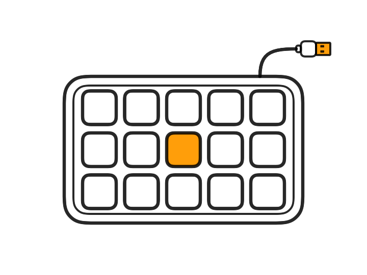
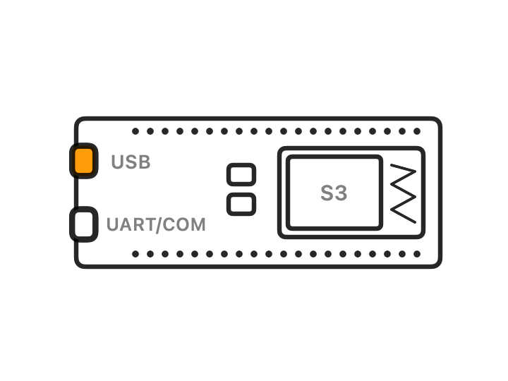
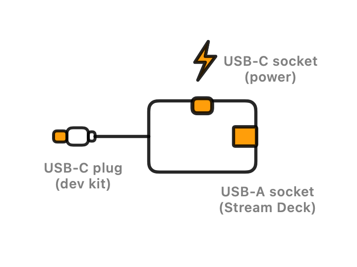
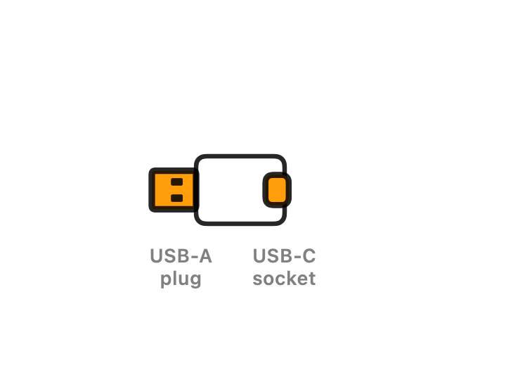
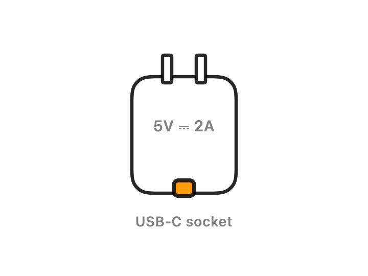
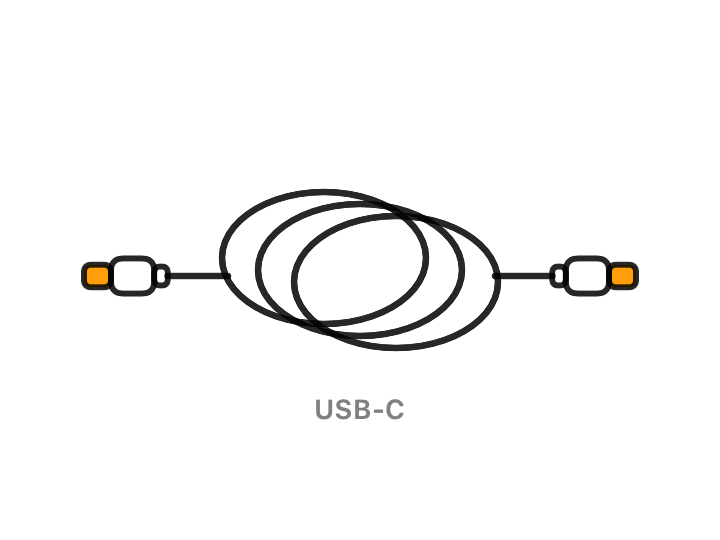
You also need a Mac on macOS 14 or later that stays on and is signed in to an iCloud account in your Home, and a 2.4 GHz Wi-Fi network. The dev kit is an ESP32-S3 with 16 MB flash and 8 MB PSRAM, sold as N16R8. The full parts list has the details that matter when you buy the adapters.
Each part links to one that's known to work with ESPDeck, on Amazon. Those are affiliate links: as an Amazon Associate I earn from qualifying purchases, at no extra cost to you.
Get started
Three steps take a box of parts to a working deck.
- Get the Mac app. ESPDeck Bridge is on its way to the Mac App Store. Until then, you can build it yourself with Xcode.
- Install the firmware. ESPDeck Bridge installs it over USB, or the web installer does the same from Chrome or Edge.
- Pair the deck and set up its keys. The setup guide covers each step, and the FAQ covers what goes wrong.